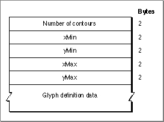

Legacy Document
Important: The information in this document is obsolete and should not be used for new development.
Important: The information in this document is obsolete and should not be used for new development.


The Glyph Data Table
The glyph data table, with a tag name of'glyf', contains the data that defines the appearance of the glyphs in the font: the specification of points that make up the contours of a glyph and the instructions that help change the shape of the glyph under various conditions. Glyphs can be stored in any character-code mapping order, since the location of the data for each is specified separately, through the character-code mapping table, which is described beginning on page 4-72, and the location table, which is described on page 4-79.The data for each glyph consists of some descriptive information, as shown in
Figure 4-18, followed by the actual instructions and coordinate values that define the glyph. The format of the definition data for glyphs is described in the TrueType Font Format Specification. Note that the glyph data is compressed.Figure 4-18 A glyph description

- Number of contours. If this integer value is positive, it specifies the number of closed curves defined in the outline data for the glyph. If it is -1, it indicates that the glyph is composed of other simple glyphs (see the explanation of component glyphs in the section "The Maximum Profile Table" beginning on page 4-79).
- xMin. The left edge of the glyph's bounding box, specified in units per em.
- yMin. The top edge of the glyph's bounding box, specified in units per em.
- xMax. The right edge of the glyph's bounding box, specified in units per em.
- yMax. The bottom edge of the glyph's bounding box, specified in units per em.
- Glyph definition data. The data that defines the appearance of the glyph, as described in the TrueType Font Format Specification.